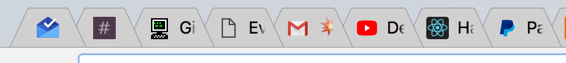
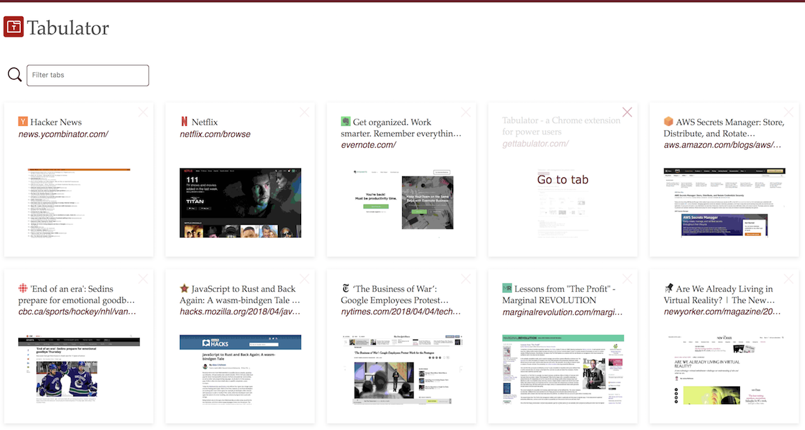

Tabulator is a Chrome extension that tries to ease the pain of managing tons of tabs.
If you're anything like me, your Chrome window looks like this

Finding a tab can be pretty difficult.
Tabulator alleviates this by overriding your new tab page to this

Tabulator offers:
- viewing all your open tabs in a card-like format
- filtering through open tabs, by title or url
- closing tabs from the page
Tabulator keeps your tabs in sync as you open, close, and move them between windows. If you have multiple windows open, the tabs you see are scoped to the window.
The following Chrome extension permissions are required
- <all_urls>: needed to capture a screenshot of a tab
- tabs: needed to access the title and url of all tabs